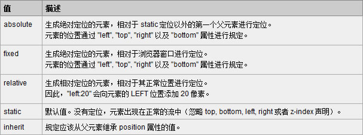

The CSS positioning properties allow you to position an element. It can also place an element behind another, and specify what should happen when an elment's content is too big.
Elements can be positioned using the top, bottom, left, and right properties. However, these properties will not work unless the position property is set first. They also work differently depending on the positioning method.
There are four different positioning methods.
HTML elements are positioned static by default. A static positioned element is always positioned according to the normal flow of the page.
Static positioned elements are not affected by the top, bottom, left, and right properties
An element with fixed position is positioned relative to the browser window.
It will not move even if the window is scrolled:
ExampleFixed positional elements are removed from the normal flow. The document and other elements behave like the fixed positioned element does not exist.
Fixed positioned elements can overlap other elements
A relative positioned element is positioned relative to its normal position:
相对定位, 参照父级（最近）的内容区的左上角为原始点结合TRBL属性进行定位（或者说相对于被定位元素在父级内容区中的上一个元素进行偏移），无父级则以BODY的左上 角为原始点。相对定位是不能层叠的。在使用相对定位时，无论元素是否进行移动，元素依然占据原来的空间。因此，移动元素会导致它覆盖其他框。
ExampleThe content of relatively positioned elements can be moved and overlap other elements, but the reserved space for the element is still preserved in the normal flow.
ExampleRelatively positioned elements are often used as container blocks for absolutely positioned elements.
An absolute position element is positioned relative to the first parent element that has a position other than static. If no such element is found, the containing block is <html>:
绝对定位， 只有设定了left, right, top, bottom属性中的至少一个，并且设置此属性为absolute。否则上述属性会使用他们的默认值auto，这将导致 遵从正常的HTML布局规则，在前一个对象之后立即被呈递.
网页居中的话用Absolute就容易出错，因为网页一直是随着分辨率的大小自动适应的，而Absolute则会以浏览器的左上角为原始点，不会应为分辨率的变化而变 化位置。
When elements are positioned outside the normal flow, they can overlap other elements
The z-index property specifies the stack order of an element (which element should be in front of, or behind, the others).
An element can have a positive or negative stack order:
Example